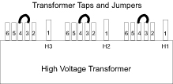

Operating Documentation
Direction 5193574-800, Rev# 22
LightSpeed 7.X Service Methods
Module Version 3.0, Version Date 8/25/14
Operating Documentation |
| Last Revision | 13 August 2014 |
| ||||
| electrocution hazard | ||||
| high voltage present | ||||
| use proper lockout/tagout procedures before servicing equipment. |
| ||||
| potential for equipment damage | ||||
| using a vacuum hose near live electronic equipment may cause damage due to static. | ||||
| Make sure equipment is turned off prior to vacuuming near electronic equipment. |
Vacuum any dust found on the covers and inside the NGPDU.
Visually inspect the NGPDU electronic components for discoloration and arcing damage.
Torque the main power connectors (for torque values, see Table 1).
Torque the main ground lug connection (for torque values, see Table 2)
Measure the No Load Line to Line Voltage at L1,L2, L3, and record readings. Do not record this data during "brown out" conditions. If “brown outs” occur, do not include that data into the overall average. Based on this voltage, determine the nearest nominal line and verify that the tap connections match. (For tap locations and connections, see Illustration 1). (For detailed instructions, refer to “Initial PDU Configuration” in Book 1 of the Installation Manual, Direction 5308551-1EN.)
Illustration 1: Tap Locations

Re-tap the transformer, if required.
Reinstall the NGPDU front and top covers.
Table 1: Power Torque Values
| Wire Size AWG | Bolt/Hex |
| #18 - 16 | 1.67 ft-lb (2.3 N-m) |
| #14 -8 | 1.67 ft-lb (2.3 N-m) |
| #6 - 4 | 3.0 ft-lb (4.1 N-m) |
| #0 - 2/0 | 29 ft-lb (39.3 N-m) |
Table 2: Ground Torque Values
| Wire Size AWG | Bolt/Hex |
| #14 - 8 | 6.25 ft-lb (8.5 N-m) |
| #6 - 4 | 12.5 ft-lb (17 N-m) |
| #3 - 1 | 21 ft-lb (28.5 N-m) |
| #0 - 2/0 | 29 ft-lb (39.3 N-m) |
Not every system has seismic anchors. If your system does, check to see if you can move the anchor washer by hand.
If moveable, follow the procedures in the state-issued seismic installation directions for your site, to inspect the anchors and re-torque them if necessary.
| NOTE: | Due to variances in local ordinances and mounting hardware, torque values may vary. |